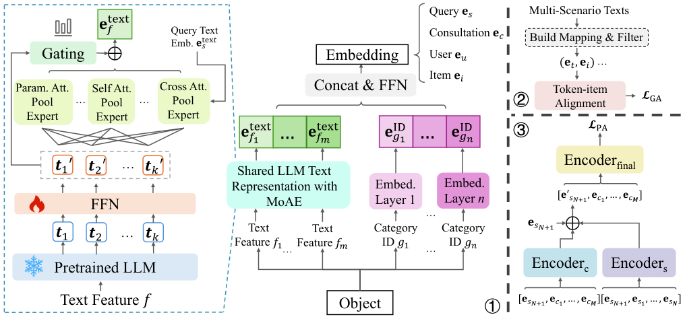

MAPS: Motivation-Aware Personalized Search via LLM-Driven Consultation Alignment (动机感知的 LLM 咨询对齐个性化搜索)
- 会议/期刊: ACL 2025 (Main)
- 作者与机构: Weicong Qin, Yi Xu, Weijie Yu, Chenglei Shen, Ming He, Jianping Fan, Xiao Zhang, Jun Xu（中国人民大学高瓴人工智能学院、对外经济贸易大学、联想研究院 AI Lab）
- 推荐链路定位: 精排（同时给出召回/检索侧 MRR 结果）
- 研究方向: 大语言模型推荐 (LLM4Rec) / 序列与会话推荐
- 论文原文: https://arxiv.org/abs/2503.01711v4
- 开源代码: https://github.com/E-qin/MAPS
TL;DR (1分钟核心速览)
现有电商个性化搜索默认"查询词已完整表达用户真实需求"，但真实平台数据显示用户在搜索前常先与 AI 咨询助手多轮对话，咨询中隐含的搜索动机才是关键增强信号。MAPS 用冻结 LLM 编码查询与咨询文本，以混合注意力专家池化 (MoAE) 自适应聚合 token，再通过"通用对齐（token–item 双向对比）+ 个性化对齐（咨询/查询历史双向注意力融合）"双路对齐动机与偏好。在 Commercial 真实数据与 GPT-4o 合成咨询的 Amazon 数据上，排序 HR@10 相对最强基线提升约 20% / 35%，检索 MRR@10 提升超 15%。
Background & Motivation (背景与核心矛盾)
- 主流范式: 个性化搜索以用户历史搜索/点击序列建模兴趣（AEM/QEM/TEM/CoPPS），或融合搜索与推荐双行为（SESRec/UnifiedSSR/UniSAR），核心是"查询–商品"直接匹配。
- 前人局限: ① 假设查询词清晰完整，但用户常只输入型号关键词（如 "X-600"），真实动机（预算、用途、专业）无法从查询文本推断；② 现有方法对文本仅做 token embedding 平均池化，缺乏世界知识与关键语义聚焦能力，且 ID 类目特征与自然语言咨询之间存在类目–文本鸿沟。
- 核心洞察 (Key Insight): 真实平台统计显示，搜索会话前存在相关咨询的比例在 3–14 天窗口内达 30.2%–58.4%（宽松/中等/严格三档规则），即咨询是可获取的动机显式载体；但咨询文本冗长、含个人情境噪声，且并非所有历史咨询都与当前查询相关。
- 本文切入点: 把"咨询动机"作为一等公民引入个性化搜索，用 LLM 统一语义空间 + 双路对齐（通用 token–item 对齐、个性化动机–偏好对齐）同时解决"动机–查询对齐、动机–类目对齐、历史噪声过滤"三大挑战。
Method (核心方法设计)
1. 整体框架 (Overall Architecture)
输入为用户画像（类目 ID + 文本特征）、当前查询 \(s_{N+1}\)、咨询历史\(H^C=\{c_1,\dots,c_M\}\)、查询历史\(H^S\)与候选商品集。三阶段闭环：① 冻结 LLM 编码所有文本，经 FFN 映射到统一维度\(d_t\)，再由 MoAE 池化得到文本向量，与类目 ID 向量拼接融合为用户/商品/查询/咨询嵌入；② 通用对齐：用规则从查询、咨询、评论、标题、广告等多场景文本中挖掘 token–item 共现映射，做双向对比学习，把 LLM 世界知识"落地"到平台垂直语义；③ 个性化对齐：以当前查询为锚，分别对咨询历史与查询历史做双向注意力编码，学习权重聚合为动机感知查询向量，再与商品历史、用户嵌入融合后点积打分。训练用负采样 softmax + 对比损失联合优化。
flowchart TD
A["用户画像 / 查询 / 咨询历史 / 查询历史"] --> B["冻结LLM编码 + FFN映射"]
B --> C["MoAE 混合注意力专家池化"]
C --> D["ID-文本融合嵌入"]
D --> E["通用对齐: token-item 双向对比"]
D --> F["个性化对齐: 咨询/查询历史双向注意力"]
E --> G["动机感知查询向量 + 用户嵌入"]
F --> G
G --> H["点积打分排序"]
2. 关键设计拆解 (Key Designs)
- MoAE 混合注意力专家池化（替代平均池化）：痛点是对不同文本（短查询 vs 长咨询）关键 token 分布差异极大，平均池化稀释语义。设计三类专家——参数化注意力池化（可学习 query \(q\)）、自注意力池化（token 自交互）、以当前查询为 query 的搜索中心交叉注意力池化（该专家对查询文本自身不激活），每类\(N_E\)个成员，门控网络按 top-\(K\)激活后加权求和：\(e_{\text{text}}=\sum_{j=1}^{K}\text{gate}_j\,e^{\text{pool}}_j\)。直觉是让模型按文本类型自适应选择"看哪些词"，交叉专家则显式把用户/商品/咨询文本拉向当前搜索意图。
- 通用对齐的双向对比损失（桥接类目–文本鸿沟）：痛点如 "Cool" 在平台是商品属性词，LLM 却理解为形容词，造成语义漂移。先用频次阈值过滤构造映射 \(\mathcal{A}^S_v=\{w\in\mathcal{A}_v\mid \text{freq}_S(w)>t\}\)，再对 token–item 对做双向 InfoNCE：\(\mathcal{L}_{GA}=-\lambda_1\sum_{(t,v)}\log\frac{\exp(\text{sim}(e_t,e_v)/\tau_1)}{\sum_{t^-}\exp(\text{sim}(e_{t^-},e_v)/\tau_1)}-\lambda_2\sum_{(t,v)}\log\frac{\exp(\text{sim}(e_t,e_v)/\tau_2)}{\sum_{v^-}\exp(\text{sim}(e_t,e_{v^-})/\tau_2)}\)。双向设计保证 token 空间与 item 空间互相校准，而非单向投影。
- 个性化对齐与训练目标：以 \(e_{s_{N+1}}\)为锚分别编码咨询历史与查询历史，取首向量得\(e^C_{s_{N+1}}\)、\(e^S_{s_{N+1}}\)，可学习权重聚合\(e'_{s_{N+1}}=\alpha_1 e^C_{s_{N+1}}+\alpha_2 e^S_{s_{N+1}}+\alpha_3 e_{s_{N+1}}\)，再经最终 Transformer 融合商品历史并加用户嵌入得\(e''_{s_{N+1}}\)。总损失\(\mathcal{L}_{\text{overall}}=\mathcal{L}_{PA}+\lambda_3\mathcal{L}_{GA}+\lambda_4\|\Theta\|_2\)，其中\(\mathcal{L}_{PA}\) 为负采样 softmax（每正样本配随机负样本）。推理时仅需一次 LLM 前向（可离线缓存文本嵌入）+ 轻量 Transformer，打分即点积。
Experimental Setup & Evaluation Protocol (实验设置与评估协议)
- 数据集与预处理（均按
5-core过滤，括号内为咨询交互数）：
| 数据集 | #Users | #Items | #Interactions | 稀疏度/密度 | 特征/场景说明 |
|---|---|---|---|---|---|
| Commercial | 2,096 | 2,691 | 24,662 (18,774) | 99.56% (99.66%) | 真实电商平台 31 天交互，含 AI 咨询 |
| Amazon | 967 | 35,772 | 7,263 (40,567) | 99.98% (99.88%) | PersonalWAB 版本，GPT-4o 合成咨询文本 |
- 数据划分与防穿越 (Splitting Strategy): Commercial 取前 29 天训练、后两天分别验证/测试（全局时间戳切分，防序列泄漏）；Amazon 沿用 UniSAR 的划分方式。
- 排名评测协议 (Ranking Protocol): 排序任务采用
Sampled Ranking——每个 ground-truth 配 99 个随机负样本，报告 HR@{5,10,20,50} 与 NDCG@{5,10,20,50}；检索任务采用Full-Ranking（全库候选），报告 MRR@{10,20,50}。 - 对比基线与超参设置: 排序基线含 ZAM/HEM/AEM/QEM/TEM/CoPPS 及多场景 SESRec/UnifiedSSR/UniSAR；检索基线含 BM25/BGE-M3/CHIQ。默认 LLM 为 Qwen2.5-7B，序列长度 30，映射阈值 \(t=2\)（Amazon 最优\(t=3\)），激活函数 tanh；显著性用配对 t 检验\(p<0.05\)。
Key Experimental Results (实验关键数据)
1. 主实验对比 (Main Results)
Commercial 排序（Sampled 1:99）：
| Model | HR@10 | HR@20 | NDCG@10 | NDCG@20 |
|---|---|---|---|---|
| AEM | 0.5376 | 0.6733 | 0.3135 | 0.3478 |
| QEM | 0.5473 | 0.6733 | 0.3144 | 0.3463 |
| TEM | 0.5685 | 0.7078 | 0.3402 | 0.3756 |
| CoPPS | 0.5637 | 0.7171 | 0.3445 | 0.3805 |
| UniSAR | 0.5838 | 0.7294 | 0.3577 | 0.3894 |
| MAPS | 0.7071 | 0.8330 | 0.4359 | 0.4680 |
| Improv.% (vs 最强基线) | +21.1% | +14.2% | +21.9% | +20.2% |
Amazon 排序：MAPS HR@10 = 0.7735 vs CoPPS 0.4854（+59.4%），NDCG@10 = 0.4676 vs 0.3298（+41.8%）。检索（Commercial，Full-Ranking）：MAPS MRR@10 = 0.3805，优于 CHIQ 0.3192（+19.2%）与 BGE-M3 0.2976（+27.9%）。
2. 消融实验 (Ablation Study)
| 变体 | HR@10 | HR@20 | N@10 | N@20 |
|---|---|---|---|---|
| MAPS | 0.7071 | 0.8330 | 0.4359 | 0.4680 |
| w/o LLM | 0.6527 | 0.7839 | 0.3968 | 0.4309 |
| w/o MoAE | 0.6781 | 0.7844 | 0.4096 | 0.4494 |
| w/o general align | 0.6198 | 0.7424 | 0.3669 | 0.4006 |
| w/o filter\(_S(\cdot)\) | 0.6201 | 0.7426 | 0.3597 | 0.3951 |
| w/o personal align | 0.6334 | 0.7518 | 0.3732 | 0.4105 |
| w/o \(e^S_{s_{N+1}}\) | 0.6565 | 0.7730 | 0.3863 | 0.4246 |
| w/o \(e^C_{s_{N+1}}\) | 0.6448 | 0.7615 | 0.3803 | 0.4170 |
表征融合对比：仅 ID 0.6870 / 仅 LLM 0.6794 / 平均池化 0.6950 / 默认融合 0.7071（HR@10）。
3. 关键实验发现 (Key Findings)
- 通用对齐是最大单点贡献：移除后 HR@10 从 0.7071 跌至 0.6198（-12.3%），甚至比移除个性化对齐（0.6334）更伤，说明 LLM 世界知识与平台垂直语义的错位（如 "Cool" 被误读为形容词）是首要瓶颈，而非动机建模本身。
- 咨询动机与查询历史互补且不可替代：单独移除咨询动机 \(e^C\)掉 6.2 个点、移除查询历史\(e^S\) 掉 5.1 个点，二者叠加的个性化对齐移除掉 7.4 个点，证明咨询提供的是查询历史无法覆盖的"前置需求"信息。
- 规模与噪声呈倒 U 型：序列长度 30 最优（40 反而降至 0.4303 NDCG@10），LLM 从 0.5B 到 7B 单调提升（0.3892→0.4359），Transformer 层数 1→4 层持续增益（0.4359→0.4561），说明更强世界知识有益但更长历史引入噪声；ReLU 因"死亡神经元"导致 HR@10 崩至 0.4390，激活函数选择敏感。
Highlights & Limitations (亮点、对比与审稿批判)
- 与代表作对比 (vs. Prior Work): 相比 TEM/CoPPS 仅用查询–商品匹配与用户嵌入，MAPS 首次把"售前咨询"作为动机显式载体；相比 UniSAR 的双行为 Transformer 交叉注意力，MAPS 增加了 token 级通用对齐来消解 LLM 与垂直场景的语义冲突；相比 CHIQ 的会话检索，MAPS 引入用户个性化与 ID 特征融合。
- 可迁移亮点: ① "频次阈值过滤 + 双向 InfoNCE"的 token–item 对齐范式可低成本迁移到任何 LLM 嵌入落地垂直域的冷启动场景；② MoAE 的"搜索中心交叉专家"设计可复用到查询改写、会话推荐中的意图聚焦。
- 审稿级局限批判: ① Amazon 的咨询文本由 GPT-4o 合成，动机分布与真实用户存在 sim-to-real 差距，Commercial 仅 2,096 用户、规模偏小；② 排序评测采用 1:99 采样而非全库排序，且未报告 LLM 在线推理延迟与嵌入缓存策略，实时部署成本存疑；③ 未建模咨询随时间的动态演化，长期偏好漂移未处理。
Rating (四维评分)
- 方法创新性 (Novelty): ⭐⭐⭐⭐ （首次显式建模售前咨询动机，MoAE + 双向通用对齐组合有新意，但各组件均为已有技术的针对性拼装）
- 评估协议与实验扎实度 (Protocol & Experiments): ⭐⭐⭐⭐ （真实+合成双数据集、排序/检索/多场景三线对比、消融与规模分析完整，扣分在采样排序与合成数据）
- 写作与数学规范度 (Clarity & Rigor): ⭐⭐⭐⭐ （三阶段结构与公式清晰，但 MoAE 门控细节与专家数量等超参描述偏简）
- 工业落地与复现价值 (Industrial & Practical Value): ⭐⭐⭐⭐ （代码开源、LLM 冻结可离线缓存嵌入，但实时性与大规模用户验证仍待补）